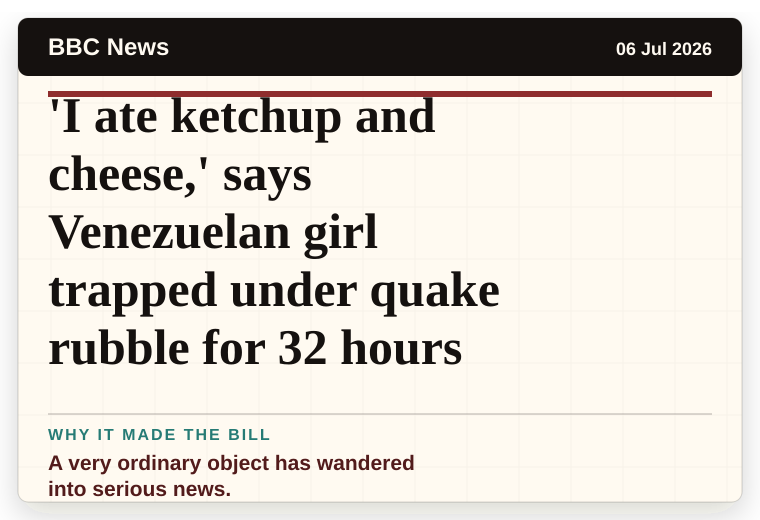
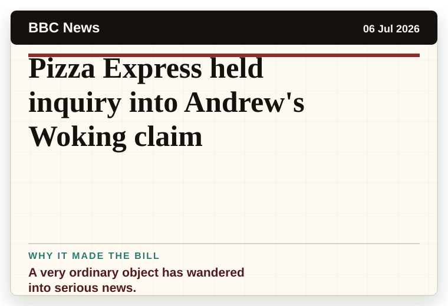
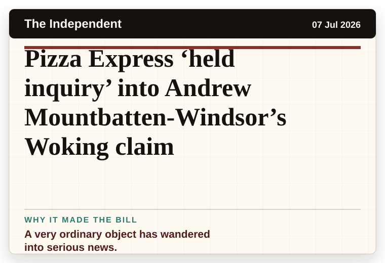
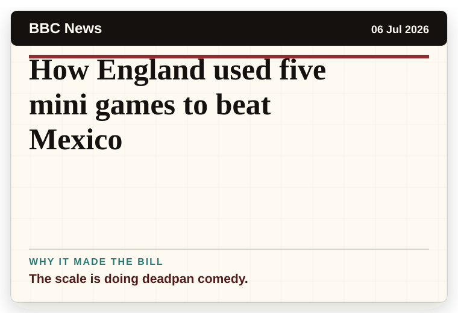
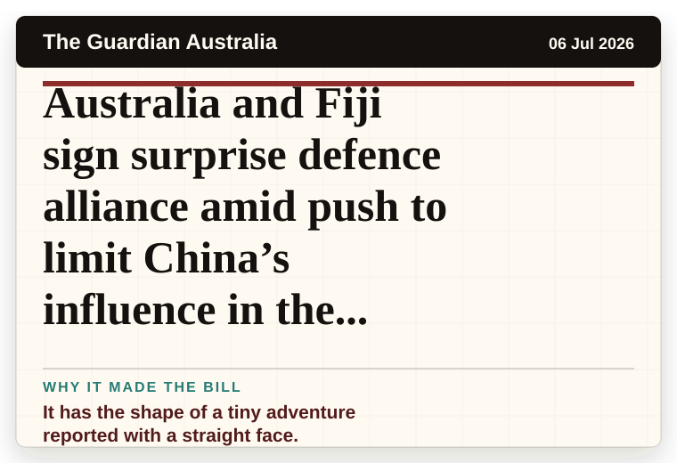
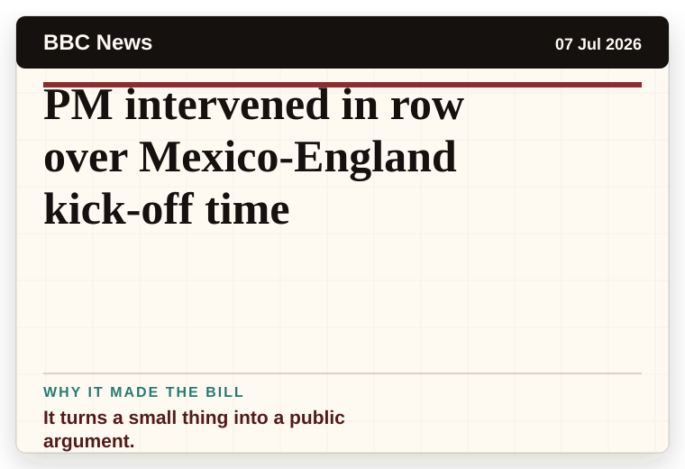

NT News
Australia
‘Bogan Rocket Launcher’: Territory Day chaos unleashed
The word chaos gives it open-mic energy.
The latest daily picks, linked back to the original sources. Search the room, pick a source, or follow a headline out to the full story.
Record updated: 07 Jul 2026, 08:01 AM AEST
Showing 15 headline candidates from the refresh run completed on 07 Jul 2026, 08:01 AM AEST.
The word chaos gives it open-mic energy.

A mystery is doing a lot of work in a very small sentence.

A wonderfully specific detail has taken centre stage.

It has the shape of a tiny adventure reported with a straight face.

The scale is doing deadpan comedy.

A mystery is doing a lot of work in a very small sentence.

A mystery is doing a lot of work in a very small sentence.

A mystery is doing a lot of work in a very small sentence.

The scale is doing deadpan comedy.

A very ordinary object has wandered into serious news.

A very ordinary object has wandered into serious news.

A very ordinary object has wandered into serious news.

The scale is doing deadpan comedy.

It has the shape of a tiny adventure reported with a straight face.

It turns a small thing into a public argument.